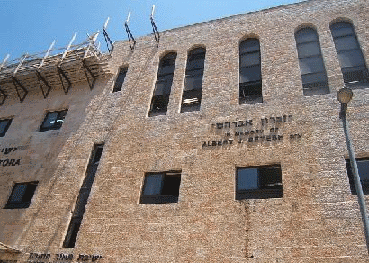

שמי הוא יאיר שור, ואני בן 30, בעל תואר ראשון במדעי המדינה ותקשורת, וסטודנט לשנה שניה להנדסת תוכנה בשנקר. גדלתי כחרדי להורים חוזרים בתשובה שהתגוררו בבני ברק, צפת וירושלים. במשך רוב תקופת הילדות שלי, אבא שלי בחר ללמוד תורה ב"כולל אברכים" בצפת ולהתפרנס בצמצום, ולא לעבוד במקצועו כעורך דין. ציינתי את העובדה שאבי היה חוזר בתשובה מכיוון שהרבה פעמים חוזרים בתשובה מחנכים את ילדיהם באדיקות דתית חזקה יותר מזו של בית חרדי רגיל.
לאחר שעברנו לירושלים כשהייתי בגיל 12, אבא שלי התחיל לעבוד והמצב הכלכלי שלנו קצת השתפר. המעבר לירושלים גם פתח אותי לאפשרויות הרבות שקיימות בתוך החברה החרדית : אם בצפת הכרתי רק ספרדים שמצביעים ש"ס ובטוחים שאריה דרעי זכאי והרב עובדיה הוא גדול הדור, בירושלים נחשפתי לחרדים אשכנזים שבזים לדרעי וקוראים לרב עובדיה "עבדאללה".
כשהתחלתי ללמוד בישיבת "מאור התורה" בירושלים, נחשפתי לראשונה גם לחרדים ספרדים מתנועת "מרביצי תורה" שהתנגדו למונופול של ש"ס והרב עובדיה על הציבור הספרדי וראו בהם מושחתים.
היה לי מאוד קשה ללמוד תורה כל היום בישיבה מ8 בבוקר עד 10 בערב, וזה עוד מגיל 13 וחצי. כאילו מצד אחד מאוד רציתי לשבת וללמוד, כי החינוך היה שזוהי מטרת האדם והמשמעות היחידה שלנו, אך מצד שני תחומי הלימוד לא היו כל כך מעניינים.
מה שהישיבה כן תרמה לי זהו החינוך ל"נכבדות " ולביקורתיות. הישיבה הונהגה על ידי רבנים שלמדו בישיבת " חברון" הסלבודקאית, ששמה דגש על "גדלות האדם", ומבקשת מכל אחד שיחשוב ש"כל העולם כולו לא נברא אלא בשבילי". גדלות האדם דורשת מכל אחד שיתנהל במכובדות ויתלבש ויתנהג בצורה מכובדת.
בנוסף בישיבה מאוד עמדו על הצורך לבקר את הנעשה מסביבנו ולא להאמין לדברי התקשורת החרדית מבלי לחשוב. שם למדתי להסתכל על התעמולה הש"סית שבנתה את מעמדו ההלכתי הגבוה של הרב עובדיה, והיו שם כאלו שסברו שגם אם הוא יודע הרבה , אין לו כושר ניתוח מספיק ראוי בכדי לפסוק הלכות. לימדו אותנו שם שההתנתקות היא דבר ראוי מכיוון שלגור בגוש קטיף זהו "וודאי פיקוח נפש", ואילו התנתקות חד צדדית היא "ספק פיקוח נפש" מכיוון שיש חשש שמא הטרוריסטים ילמדו שישראל מבינה רק כוח, והכלל הוא ש"אין ספק מוציא מידי וודאי", ולכן יש להסכים עם מהלך ההתנתקות ולכן הרב אלישיב הורה להימנע בהצבעה על המהלך (הם לא יגידו שזה רק בשביל כסף לישיבות כמובן).
בגיל 20 עזבתי את הישיבה. עשיתי זאת בעיקר כי לא יכולתי ללמוד תורה כל היום וחשתי צורך לעשות משהו אחר. רציתי להתגייס לצבא, אבל אבא שלי מאוד פחד שאתחלן בצבא והשיג חוות דעת פסיכולוגית שאני לא מתאים וכך קיבלתי פטור משרות צבאי מהקב"ן.
אחרי שהבנתי שצבא אני לא אעשה, הלכתי לעבוד במכולת במשך היום (לא היו לי כישורים לעשות משהו מכובד יותר), ולמדתי לבגרויות ב"אנקורי" בערב. לאחר שנתיים של בגרויות ופסיכומטרי הלכתי לאוניברסיטת בר אילן ללמוד מדעי המדינה ותקשורת. כשהגעתי לבר אילן החלפתי את הכיפה לסרוגה בכדי לא לבלוט.
העולם האקדמי הרחיב לי עוד יותר את הדעת. הבנתי שאין שום הוכחה לצורך להיות דתי או לקיומו של אלוהים. קודם לכן הייתי שבוי בהנחה של החרדים שלהכול יש הוכחות. הבנתי שישנו ספק גדול מתי נכתבה התורה ומי כתב אותה, ושרוב הסיכויים שחומשי התורה נכתבו בזמנים שונים. נחשפתי לספר "אמונתו של הרמב"ם" של ישעיהו לייבוביץ' שטוען שאלוהים לא משגיח על כל אחד מבני האדם אלא רק יצר עולם טבעי שמנוהל אך ורק על ידי הטבע, וקראתי את "מאמר תיאולוגי מדיני" שמבקר את המקרא ואת הדת היהודית.וכך גמלה בליבי החלטה להפסיק לשמור מצוות לקראת סיום התואר הראשון.
ההבנה שאין אלוהים יצרה אצלי משבר זהות קשה. הייתי צריך לעבור מאמונה ממש חזקה עם המון תפילות להבנה שאין למי להתפלל מעבר לעצמי. ואם קודם הייתי חי בגלל שאלוהים ביקש ממני לחיות ולשמור מצוות, עכשיו אני צריך לחיות סתם כי אני חי ולא למען איזושהי מטרה נעלה.
כעת אני לא שומר מצוות בכלל, אבל עדיין מאוד מחובר לתורה היהודית. הבנתי שגם אם התורה היא לא האמת המוחלטת , בשבילי היא מקור לתרבות שעליה גדלתי ושאני יכול להפיק ממנה עוד הרבה. אני בעיקר אוהב לקרוא את הרמב"ם שמתכתב עם הפילוסופים של זמנו ולא דורש אמונה תמימה וחרדית. אני לפעמים נוסע לבית כנסת מרוחק בשבת בכדי לשמוע שיעור תורה שאני אוהב. כיוצא בשאלה אני עדיין מאוד סקרן לגבי המתרחש בחברה החרדית, ושואף שהיא תיעשה חברה טובה יותר מזו שגדלתי בה.
בתחילת 2015 הצטרפתי לעמותת הלל, וכך הצלחתי למצוא קהילה של יוצאים בשאלה שמתחבטים באותן השאלות והבעיות, וכך זה מקל על תחושת הבדידות והזהות.